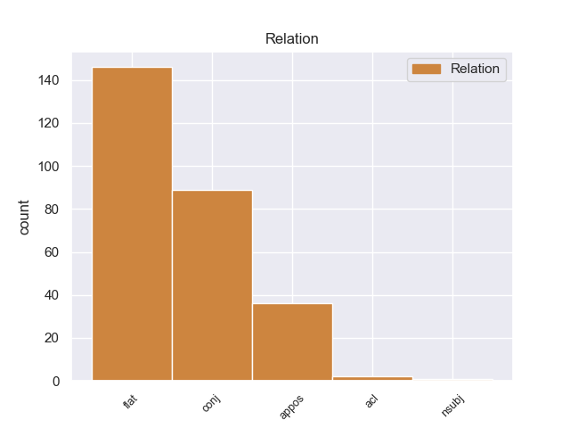
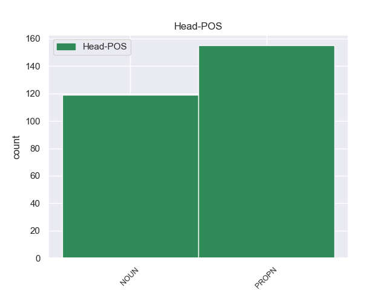
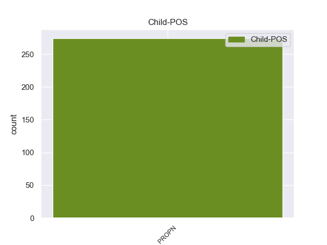

Distribution of features within this leaf



Agreement Rules sorted by frequency.
- When the dependent token is the conjunct(conj) of the head token, and the dependent token is NOUN.
1 Το _ _ _ _ 0 _ _ _
2 άρθρο _ _ _ _ 0 _ _ _
3 9 _ _ _ _ 0 _ _ _
4 του _ _ _ _ 0 _ _ _
5 Πρωτοκόλλου _ _ _ _ 0 _ _ _
6 , _ _ _ _ 0 _ _ _
7 όπως _ _ _ _ 0 _ _ _
8 επεσήμανε _ _ _ _ 0 _ _ _
9 με _ _ _ _ 0 _ _ _
10 αυστηρότητα _ _ _ _ 0 _ _ _
11 η _ _ _ _ 0 _ _ _
12 Πρόεδρος _ _ _ _ 0 _ _ _
13 Fontaine _ _ _ _ 0 _ _ _
14 σ _ _ _ _ 0 _ _ _
15 τον _ _ _ _ 0 _ _ _
16 Εισαγγελέα _ _ _ _ 0 _ _ _
17 , _ _ _ _ 0 _ _ _
18 μας _ _ _ _ 0 _ _ _
19 απαλλάσσει _ _ _ _ 0 _ _ _
20 τελείως _ _ _ _ 0 _ _ _
21 από _ _ _ _ 0 _ _ _
22 οποιαδήποτε _ _ _ _ 0 _ _ _
23 νομική _ _ _ _ 0 _ _ _
24 διαδικασία _ _ _ _ 0 _ _ _
25 σε _ _ _ _ 0 _ _ _
26 σχέση _ _ _ _ 0 _ _ _
27 με _ _ _ _ 0 _ _ _
28 την _ _ _ _ 0 _ _ _
29 έκφραση _ _ _ _ 0 _ _ _
30 γνώμης γνώμη NOUN -- Case=Gen|Gender=Fem|Number=Sing 0 _ _ _
31 ή _ _ _ _ 0 _ _ _
32 ψήφου ψήφος NOUN -- Case=Gen|Gender=Fem|Number=Sing 30 conj _ _
33 κατά _ _ _ _ 0 _ _ _
34 την _ _ _ _ 0 _ _ _
35 άσκηση _ _ _ _ 0 _ _ _
36 των _ _ _ _ 0 _ _ _
37 καθηκόντων _ _ _ _ 0 _ _ _
38 μας _ _ _ _ 0 _ _ _
39 ως _ _ _ _ 0 _ _ _
40 μέλη _ _ _ _ 0 _ _ _
41 αυτού _ _ _ _ 0 _ _ _
42 του _ _ _ _ 0 _ _ _
43 Κοινοβουλίου _ _ _ _ 0 _ _ _
44 . _ _ _ _ 0 _ _ _
1 Από _ _ _ _ 0 _ _ _
2 τη _ _ _ _ 0 _ _ _
3 πλευρά _ _ _ _ 0 _ _ _
4 του _ _ _ _ 0 _ _ _
5 ο _ _ _ _ 0 _ _ _
6 Πρωθυπουργός _ _ _ _ 0 _ _ _
7 του _ _ _ _ 0 _ _ _
8 Ισραήλ _ _ _ _ 0 _ _ _
9 , _ _ _ _ 0 _ _ _
10 Βενιαμίν _ _ _ _ 0 _ _ _
11 Νετανιάχου _ _ _ _ 0 _ _ _
12 , _ _ _ _ 0 _ _ _
13 εξέφρασε _ _ _ _ 0 _ _ _
14 ικανοποίηση _ _ _ _ 0 _ _ _
15 για _ _ _ _ 0 _ _ _
16 το _ _ _ _ 0 _ _ _
17 σχόλιο _ _ _ _ 0 _ _ _
18 του _ _ _ _ 0 _ _ _
19 Μπαράκ Μπαράκ PROPN -- Case=Gen|Gender=Masc|Number=Sing 0 _ _ _
20 Ομπάμα Ομπάμα PROPN -- Case=Gen|Gender=Masc|Number=Sing 19 flat _ _
21 ότι _ _ _ _ 0 _ _ _
22 « _ _ _ _ 0 _ _ _
23 θα _ _ _ _ 0 _ _ _
24 εξεταστούν _ _ _ _ 0 _ _ _
25 όλες _ _ _ _ 0 _ _ _
26 οι _ _ _ _ 0 _ _ _
27 εναλλακτικές _ _ _ _ 0 _ _ _
28 λύσεις _ _ _ _ 0 _ _ _
29 αναφορικά _ _ _ _ 0 _ _ _
30 με _ _ _ _ 0 _ _ _
31 το _ _ _ _ 0 _ _ _
32 πυρηνικό _ _ _ _ 0 _ _ _
33 πρόγραμμα _ _ _ _ 0 _ _ _
34 του _ _ _ _ 0 _ _ _
35 Ιράν _ _ _ _ 0 _ _ _
36 » _ _ _ _ 0 _ _ _
37 . _ _ _ _ 0 _ _ _
1 Οι _ _ _ _ 0 _ _ _
2 Αρχές _ _ _ _ 0 _ _ _
3 της _ _ _ _ 0 _ _ _
4 Μισουράτας Μισουράτας PROPN -- Case=Gen|Gender=Fem|Number=Sing 0 _ _ _
5 ( _ _ _ _ 0 _ _ _
6 ή _ _ _ _ 0 _ _ _
7 Μισράτας Μισράτας PROPN -- Case=Gen|Gender=Fem|Number=Sing 4 conj _ _
8 ) _ _ _ _ 0 _ _ _
9 , _ _ _ _ 0 _ _ _
10 της _ _ _ _ 0 _ _ _
11 τρίτης _ _ _ _ 0 _ _ _
12 μεγαλύτερης _ _ _ _ 0 _ _ _
13 πόλης _ _ _ _ 0 _ _ _
14 σ _ _ _ _ 0 _ _ _
15 τη _ _ _ _ 0 _ _ _
16 Λιβύη _ _ _ _ 0 _ _ _
17 , _ _ _ _ 0 _ _ _
18 εξέφρασαν _ _ _ _ 0 _ _ _
19 την _ _ _ _ 0 _ _ _
20 επιθυμία _ _ _ _ 0 _ _ _
21 τους _ _ _ _ 0 _ _ _
22 για _ _ _ _ 0 _ _ _
23 καθεστώς _ _ _ _ 0 _ _ _
24 ημιαυτονομίας _ _ _ _ 0 _ _ _
25 . _ _ _ _ 0 _ _ _
1 Ο _ _ _ _ 0 _ _ _
2 Χάουμε _ _ _ _ 0 _ _ _
3 Μάτας _ _ _ _ 0 _ _ _
4 είχε _ _ _ _ 0 _ _ _
5 λάβει _ _ _ _ 0 _ _ _
6 παρανόμως _ _ _ _ 0 _ _ _
7 500.000 _ _ _ _ 0 _ _ _
8 ευρώ ευρώ NOUN -- Case=Acc|Gender=Neut|Number=Sing 0 _ _ _
9 ( _ _ _ _ 0 _ _ _
10 δημόσια _ _ _ _ 0 _ _ _
11 χρήματα χρήμα NOUN -- Case=Acc|Gender=Neut|Number=Plur 8 appos _ _
12 ) _ _ _ _ 0 _ _ _
13 , _ _ _ _ 0 _ _ _
14 για _ _ _ _ 0 _ _ _
15 να _ _ _ _ 0 _ _ _
16 πληρώσει _ _ _ _ 0 _ _ _
17 δημοσιογράφο _ _ _ _ 0 _ _ _
18 που _ _ _ _ 0 _ _ _
19 έγραφε _ _ _ _ 0 _ _ _
20 τις _ _ _ _ 0 _ _ _
21 ομιλίες _ _ _ _ 0 _ _ _
22 του _ _ _ _ 0 _ _ _
23 . _ _ _ _ 0 _ _ _
1 O _ _ _ _ 0 _ _ _
2 Πρόεδρος πρόεδρος NOUN -- Case=Nom|Gender=Masc|Number=Sing 0 _ _ _
3 των _ _ _ _ 0 _ _ _
4 ΗΠΑ _ _ _ _ 0 _ _ _
5 , _ _ _ _ 0 _ _ _
6 Μπαράκ Μπαράκ PROPN -- Case=Nom|Gender=Masc|Number=Sing 2 appos _ _
7 Ομπάμα _ _ _ _ 0 _ _ _
8 , _ _ _ _ 0 _ _ _
9 επανέλαβε _ _ _ _ 0 _ _ _
10 την _ _ _ _ 0 _ _ _
11 δέσμευσή _ _ _ _ 0 _ _ _
12 του _ _ _ _ 0 _ _ _
13 ότι _ _ _ _ 0 _ _ _
14 θα _ _ _ _ 0 _ _ _
15 εξεταστούν _ _ _ _ 0 _ _ _
16 όλες _ _ _ _ 0 _ _ _
17 οι _ _ _ _ 0 _ _ _
18 εναλλακτικές _ _ _ _ 0 _ _ _
19 λύσεις _ _ _ _ 0 _ _ _
20 , _ _ _ _ 0 _ _ _
21 συμπεριλαμβανομένης _ _ _ _ 0 _ _ _
22 και _ _ _ _ 0 _ _ _
23 της _ _ _ _ 0 _ _ _
24 στρατιωτικής _ _ _ _ 0 _ _ _
25 αναμέτρησης _ _ _ _ 0 _ _ _
26 , _ _ _ _ 0 _ _ _
27 για _ _ _ _ 0 _ _ _
28 να _ _ _ _ 0 _ _ _
29 μην _ _ _ _ 0 _ _ _
30 αποκτήσει _ _ _ _ 0 _ _ _
31 το _ _ _ _ 0 _ _ _
32 Ιράν _ _ _ _ 0 _ _ _
33 πυρηνικά _ _ _ _ 0 _ _ _
34 όπλα _ _ _ _ 0 _ _ _
35 . _ _ _ _ 0 _ _ _
1 Σ _ _ _ _ 0 _ _ _
2 τα _ _ _ _ 0 _ _ _
3 ανατολικά _ _ _ _ 0 _ _ _
4 της _ _ _ _ 0 _ _ _
5 πόλης _ _ _ _ 0 _ _ _
6 της _ _ _ _ 0 _ _ _
7 Κέρκυρας _ _ _ _ 0 _ _ _
8 βρίσκεται _ _ _ _ 0 _ _ _
9 το _ _ _ _ 0 _ _ _
10 Παλαιό _ _ _ _ 0 _ _ _
11 Φρούριο _ _ _ _ 0 _ _ _
12 , _ _ _ _ 0 _ _ _
13 χτισμένο χτίζω VERB -- Aspect=Perf|Case=Nom|Gender=Neut|Number=Sing|VerbForm=Part|Voice=Pass 0 _ _ _
14 τα _ _ _ _ 0 _ _ _
15 μέσα μέσο NOUN -- Case=Acc|Gender=Neut|Number=Plur 13 obl _ _
16 του _ _ _ _ 0 _ _ _
17 16ου _ _ _ _ 0 _ _ _
18 αιώνα _ _ _ _ 0 _ _ _
19 , _ _ _ _ 0 _ _ _
20 εντός _ _ _ _ 0 _ _ _
21 του _ _ _ _ 0 _ _ _
22 οποίου _ _ _ _ 0 _ _ _
23 μπορεί _ _ _ _ 0 _ _ _
24 κάποιος _ _ _ _ 0 _ _ _
25 να _ _ _ _ 0 _ _ _
26 δει _ _ _ _ 0 _ _ _
27 το _ _ _ _ 0 _ _ _
28 ναό _ _ _ _ 0 _ _ _
29 του _ _ _ _ 0 _ _ _
30 Αγίου _ _ _ _ 0 _ _ _
31 Γεωργίου _ _ _ _ 0 _ _ _
32 - _ _ _ _ 0 _ _ _
33 μοναδική _ _ _ _ 0 _ _ _
34 παγκοσμίως _ _ _ _ 0 _ _ _
35 ορθόδοξη _ _ _ _ 0 _ _ _
36 εκκλησία _ _ _ _ 0 _ _ _
37 δωρικού _ _ _ _ 0 _ _ _
38 ρυθμού _ _ _ _ 0 _ _ _
39 - _ _ _ _ 0 _ _ _
40 και _ _ _ _ 0 _ _ _
41 τους _ _ _ _ 0 _ _ _
42 παλιούς _ _ _ _ 0 _ _ _
43 αγγλικούς _ _ _ _ 0 _ _ _
44 στρατώνες _ _ _ _ 0 _ _ _
45 . _ _ _ _ 0 _ _ _
1 Μία _ _ _ _ 0 _ _ _
2 τελευταία _ _ _ _ 0 _ _ _
3 , _ _ _ _ 0 _ _ _
4 αλλά _ _ _ _ 0 _ _ _
5 σημαντική _ _ _ _ 0 _ _ _
6 παρατήρηση _ _ _ _ 0 _ _ _
7 , _ _ _ _ 0 _ _ _
8 γιατί _ _ _ _ 0 _ _ _
9 τόσο _ _ _ _ 0 _ _ _
10 εσείς εγώ PRON -- Case=Nom|Gender=Masc|Number=Plur|Person=2|PronType=Prs 0 _ _ _
11 , _ _ _ _ 0 _ _ _
12 κύριε _ _ _ _ 0 _ _ _
13 Πρόεδρε πρόεδρος NOUN -- Case=Voc|Gender=Masc|Number=Sing 10 vocative _ _
14 , _ _ _ _ 0 _ _ _
15 όσο _ _ _ _ 0 _ _ _
16 και _ _ _ _ 0 _ _ _
17 ο _ _ _ _ 0 _ _ _
18 κ. _ _ _ _ 0 _ _ _
19 Poettering _ _ _ _ 0 _ _ _
20 αναφερθήκατε _ _ _ _ 0 _ _ _
21 σε _ _ _ _ 0 _ _ _
22 αυτό _ _ _ _ 0 _ _ _
23 με _ _ _ _ 0 _ _ _
24 διαφορετικούς _ _ _ _ 0 _ _ _
25 τρόπους _ _ _ _ 0 _ _ _
26 . _ _ _ _ 0 _ _ _
1 Αλγερία Αλγερία PROPN -- Case=Acc|Gender=Fem|Number=Sing 0 _ _ _
2 : _ _ _ _ 0 _ _ _
3 Απαγωγές απαγωγή NOUN -- Case=Acc|Gender=Fem|Number=Plur 1 parataxis _ _
4 ξένων _ _ _ _ 0 _ _ _
5 πολιτών _ _ _ _ 0 _ _ _
6 απ' _ _ _ _ 0 _ _ _
7 την _ _ _ _ 0 _ _ _
8 Αλ _ _ _ _ 0 _ _ _
9 Κάιντα _ _ _ _ 0 _ _ _
10 . _ _ _ _ 0 _ _ _
1 Σε _ _ _ _ 0 _ _ _
2 ελεύθερη _ _ _ _ 0 _ _ _
3 πτώση πτώση NOUN -- Case=Acc|Gender=Fem|Number=Sing 0 _ _ _
4 η _ _ _ _ 0 _ _ _
5 ελευθερία ελευθερία NOUN -- Case=Nom|Gender=Fem|Number=Sing 3 nsubj _ _
6 του _ _ _ _ 0 _ _ _
7 τύπου _ _ _ _ 0 _ _ _
8 σ _ _ _ _ 0 _ _ _
9 την _ _ _ _ 0 _ _ _
10 Ελλάδα _ _ _ _ 0 _ _ _
11 σύμφωνα _ _ _ _ 0 _ _ _
12 με _ _ _ _ 0 _ _ _
13 την _ _ _ _ 0 _ _ _
14 ετήσια _ _ _ _ 0 _ _ _
15 έκθεση _ _ _ _ 0 _ _ _
16 του _ _ _ _ 0 _ _ _
17 διεθνούς _ _ _ _ 0 _ _ _
18 οργανισμού _ _ _ _ 0 _ _ _
19 " _ _ _ _ 0 _ _ _
20 Δημοσιογράφοι _ _ _ _ 0 _ _ _
21 Χωρίς _ _ _ _ 0 _ _ _
22 Σύνορα _ _ _ _ 0 _ _ _
23 " _ _ _ _ 0 _ _ _
24 . _ _ _ _ 0 _ _ _
1 Η _ _ _ _ 0 _ _ _
2 Κέρκυρα _ _ _ _ 0 _ _ _
3 , _ _ _ _ 0 _ _ _
4 πρωτεύουσα _ _ _ _ 0 _ _ _
5 του _ _ _ _ 0 _ _ _
6 νησιού _ _ _ _ 0 _ _ _
7 με _ _ _ _ 0 _ _ _
8 χαρακτηριστικό _ _ _ _ 0 _ _ _
9 της _ _ _ _ 0 _ _ _
10 γνώρισμα γνώρισμα NOUN -- Case=Acc|Gender=Neut|Number=Sing 0 _ _ _
11 τα _ _ _ _ 0 _ _ _
12 βενετσιάνικα _ _ _ _ 0 _ _ _
13 καντούνια καντούνι NOUN -- Case=Acc|Gender=Neut|Number=Plur 10 acl _ _
14 και _ _ _ _ 0 _ _ _
15 τα _ _ _ _ 0 _ _ _
16 αγγλικά _ _ _ _ 0 _ _ _
17 αρχοντικά _ _ _ _ 0 _ _ _
18 αποτελεί _ _ _ _ 0 _ _ _
19 διεθνές _ _ _ _ 0 _ _ _
20 τουριστικό _ _ _ _ 0 _ _ _
21 κέντρο _ _ _ _ 0 _ _ _
22 . _ _ _ _ 0 _ _ _
1 Προτάθηκαν _ _ _ _ 0 _ _ _
2 για _ _ _ _ 0 _ _ _
3 τη _ _ _ _ 0 _ _ _
4 θέση _ _ _ _ 0 _ _ _
5 του _ _ _ _ 0 _ _ _
6 Γενικού _ _ _ _ 0 _ _ _
7 Διοικητή _ _ _ _ 0 _ _ _
8 του _ _ _ _ 0 _ _ _
9 νησιού _ _ _ _ 0 _ _ _
10 οι _ _ _ _ 0 _ _ _
11 Δροζ _ _ _ _ 0 _ _ _
12 , _ _ _ _ 0 _ _ _
13 Σέφερ _ _ _ _ 0 _ _ _
14 , _ _ _ _ 0 _ _ _
15 ο _ _ _ _ 0 _ _ _
16 Μαυροβούνιος _ _ _ _ 0 _ _ _
17 Πέτροβιτς _ _ _ _ 0 _ _ _
18 Μπόζα _ _ _ _ 0 _ _ _
19 , _ _ _ _ 0 _ _ _
20 ο _ _ _ _ 0 _ _ _
21 πρίγκιπας _ _ _ _ 0 _ _ _
22 Βάττεμβεργ _ _ _ _ 0 _ _ _
23 ενώ _ _ _ _ 0 _ _ _
24 οι _ _ _ _ 0 _ _ _
25 Τούρκοι _ _ _ _ 0 _ _ _
26 ήθελαν _ _ _ _ 0 _ _ _
27 γι' _ _ _ _ 0 _ _ _
28 αυτή _ _ _ _ 0 _ _ _
29 τη _ _ _ _ 0 _ _ _
30 θέση _ _ _ _ 0 _ _ _
31 τον _ _ _ _ 0 _ _ _
32 Ανθόπουλο Ανθόπουλος PROPN -- Case=Acc|Gender=Masc|Number=Sing 0 _ _ _
33 πασά πασάς NOUN -- Case=Acc|Gender=Masc|Number=Sing 32 flat _ _
34 . _ _ _ _ 0 _ _ _
1 Τέθηκε _ _ _ _ 0 _ _ _
2 επικεφαλής _ _ _ _ 0 _ _ _
3 επανάστασης _ _ _ _ 0 _ _ _
4 ( _ _ _ _ 0 _ _ _
5 με _ _ _ _ 0 _ _ _
6 το _ _ _ _ 0 _ _ _
7 κίνημα _ _ _ _ 0 _ _ _
8 Εθνικής _ _ _ _ 0 _ _ _
9 Άμυνας _ _ _ _ 0 _ _ _
10 ) _ _ _ _ 0 _ _ _
11 με _ _ _ _ 0 _ _ _
12 έδρα έδρα NOUN -- Case=Acc|Gender=Fem|Number=Sing 0 _ _ _
13 τη _ _ _ _ 0 _ _ _
14 Θεσσαλονίκη Θεσσαλονίκη PROPN -- Case=Acc|Gender=Fem|Number=Sing 12 acl _ _
15 , _ _ _ _ 0 _ _ _
16 σ _ _ _ _ 0 _ _ _
17 την _ _ _ _ 0 _ _ _
18 οποία _ _ _ _ 0 _ _ _
19 πήγε _ _ _ _ 0 _ _ _
20 και _ _ _ _ 0 _ _ _
21 σχημάτισε _ _ _ _ 0 _ _ _
22 επαναστατική _ _ _ _ 0 _ _ _
23 " _ _ _ _ 0 _ _ _
24 Προσωρινή _ _ _ _ 0 _ _ _
25 Κυβέρνηση _ _ _ _ 0 _ _ _
26 Εθνικής _ _ _ _ 0 _ _ _
27 Άμυνας _ _ _ _ 0 _ _ _
28 " _ _ _ _ 0 _ _ _
29 μαζί _ _ _ _ 0 _ _ _
30 με _ _ _ _ 0 _ _ _
31 τους _ _ _ _ 0 _ _ _
32 ναύαρχο _ _ _ _ 0 _ _ _
33 Παύλο _ _ _ _ 0 _ _ _
34 Κουντουριώτη _ _ _ _ 0 _ _ _
35 και _ _ _ _ 0 _ _ _
36 στρατηγό _ _ _ _ 0 _ _ _
37 Παναγιώτη _ _ _ _ 0 _ _ _
38 Δαγκλή _ _ _ _ 0 _ _ _
39 χρησιμοποιώντας _ _ _ _ 0 _ _ _
40 την _ _ _ _ 0 _ _ _
41 Κρητική _ _ _ _ 0 _ _ _
42 Χωροφυλακή _ _ _ _ 0 _ _ _
43 αφού _ _ _ _ 0 _ _ _
44 προηγουμένως _ _ _ _ 0 _ _ _
45 , _ _ _ _ 0 _ _ _
46 σ _ _ _ _ 0 _ _ _
47 τις _ _ _ _ 0 _ _ _
48 25_Σεπτεμβρίου _ _ _ _ 0 _ _ _
49 , _ _ _ _ 0 _ _ _
50 πέρασε _ _ _ _ 0 _ _ _
51 από _ _ _ _ 0 _ _ _
52 την _ _ _ _ 0 _ _ _
53 Κρήτη _ _ _ _ 0 _ _ _
54 , _ _ _ _ 0 _ _ _
55 η _ _ _ _ 0 _ _ _
56 οποία _ _ _ _ 0 _ _ _
57 προσχώρησε _ _ _ _ 0 _ _ _
58 κι _ _ _ _ 0 _ _ _
59 αυτή _ _ _ _ 0 _ _ _
60 σ _ _ _ _ 0 _ _ _
61 την _ _ _ _ 0 _ _ _
62 επανάσταση _ _ _ _ 0 _ _ _
63 . _ _ _ _ 0 _ _ _
1 Η _ _ _ _ 0 _ _ _
2 δράση _ _ _ _ 0 _ _ _
3 3 _ _ _ _ 0 _ _ _
4 περιλαμβάνει _ _ _ _ 0 _ _ _
5 τις _ _ _ _ 0 _ _ _
6 πρωτοβουλίες _ _ _ _ 0 _ _ _
7 σ _ _ _ _ 0 _ _ _
8 τον _ _ _ _ 0 _ _ _
9 τομέα _ _ _ _ 0 _ _ _
10 της _ _ _ _ 0 _ _ _
11 νεολαίας _ _ _ _ 0 _ _ _
12 , _ _ _ _ 0 _ _ _
13 η _ _ _ _ 0 _ _ _
14 δράση δράση NOUN -- Case=Nom|Gender=Fem|Number=Sing 0 _ _ _
15 4 _ _ _ _ 0 _ _ _
16 την _ _ _ _ 0 _ _ _
17 υποστήριξη υποστήριξη NOUN -- Case=Acc|Gender=Fem|Number=Sing 14 orphan _ _
18 πρωτοβουλιών _ _ _ _ 0 _ _ _
19 που _ _ _ _ 0 _ _ _
20 ξεπερνούν _ _ _ _ 0 _ _ _
21 το _ _ _ _ 0 _ _ _
22 πλαίσιο _ _ _ _ 0 _ _ _
23 των _ _ _ _ 0 _ _ _
24 μεμονωμένων _ _ _ _ 0 _ _ _
25 προγραμμάτων _ _ _ _ 0 _ _ _
26 και _ _ _ _ 0 _ _ _
27 διεξάγονται _ _ _ _ 0 _ _ _
28 από _ _ _ _ 0 _ _ _
29 κοινού _ _ _ _ 0 _ _ _
30 με _ _ _ _ 0 _ _ _
31 τα _ _ _ _ 0 _ _ _
32 προγράμματα _ _ _ _ 0 _ _ _
33 LEONARDO _ _ _ _ 0 _ _ _
34 και _ _ _ _ 0 _ _ _
35 ΣΩΚΡΑΤΗΣ _ _ _ _ 0 _ _ _
36 . _ _ _ _ 0 _ _ _
Disagree Examples:
1 Σ _ _ _ _ 0 _ _ _
2 τον _ _ _ _ 0 _ _ _
3 ποταμό ποταμός NOUN -- Case=Acc|Gender=Masc|Number=Sing 0 _ _ _
4 Αχέροντα Αχέροντας PROPN -- Case=Acc|Gender=Neut|Number=Sing 3 flat _ _
5 . _ _ _ _ 0 _ _ _
1 Ο _ _ _ _ 0 _ _ _
2 Αχέροντας _ _ _ _ 0 _ _ _
3 διασχίζοντας _ _ _ _ 0 _ _ _
4 την _ _ _ _ 0 _ _ _
5 κοιλάδα _ _ _ _ 0 _ _ _
6 που _ _ _ _ 0 _ _ _
7 σχηματίζεται _ _ _ _ 0 _ _ _
8 ανάμεσα _ _ _ _ 0 _ _ _
9 σ _ _ _ _ 0 _ _ _
10 τους _ _ _ _ 0 _ _ _
11 ορεινούς _ _ _ _ 0 _ _ _
12 όγκους _ _ _ _ 0 _ _ _
13 της _ _ _ _ 0 _ _ _
14 Δυτικής _ _ _ _ 0 _ _ _
15 Ηπείρου _ _ _ _ 0 _ _ _
16 διέρχεται _ _ _ _ 0 _ _ _
17 από _ _ _ _ 0 _ _ _
18 ένα _ _ _ _ 0 _ _ _
19 στενό _ _ _ _ 0 _ _ _
20 φαράγγι _ _ _ _ 0 _ _ _
21 μεταξύ _ _ _ _ 0 _ _ _
22 των _ _ _ _ 0 _ _ _
23 βουνών _ _ _ _ 0 _ _ _
24 Παραμυθίας παραμυθία PROPN -- Case=Gen|Gender=Fem|Number=Sing 0 _ _ _
25 και _ _ _ _ 0 _ _ _
26 Σουλίου Σούλι PROPN -- Case=Gen|Gender=Neut|Number=Sing 24 conj _ _
27 , _ _ _ _ 0 _ _ _
28 το _ _ _ _ 0 _ _ _
29 οποίο _ _ _ _ 0 _ _ _
30 ονομάζεται _ _ _ _ 0 _ _ _
31 " _ _ _ _ 0 _ _ _
32 Στενά _ _ _ _ 0 _ _ _
33 του _ _ _ _ 0 _ _ _
34 Αχέροντα _ _ _ _ 0 _ _ _
35 " _ _ _ _ 0 _ _ _
36 . _ _ _ _ 0 _ _ _
1 Σε _ _ _ _ 0 _ _ _
2 αρκετά _ _ _ _ 0 _ _ _
3 σημεία _ _ _ _ 0 _ _ _
4 του _ _ _ _ 0 _ _ _
5 ποταμού _ _ _ _ 0 _ _ _
6 σχηματίζονται _ _ _ _ 0 _ _ _
7 νερόλακκοι νερόλακκος NOUN -- Case=Nom|Gender=Masc|Number=Plur 0 _ _ _
8 και _ _ _ _ 0 _ _ _
9 μικρές _ _ _ _ 0 _ _ _
10 λιμνούλες λιμνούλα NOUN -- Case=Nom|Gender=Fem|Number=Plur 7 conj _ _
11 . _ _ _ _ 0 _ _ _
1 Σε _ _ _ _ 0 _ _ _
2 περιοχές _ _ _ _ 0 _ _ _
3 γύρω _ _ _ _ 0 _ _ _
4 από _ _ _ _ 0 _ _ _
5 τον _ _ _ _ 0 _ _ _
6 ποταμό _ _ _ _ 0 _ _ _
7 φιλοξενούνται _ _ _ _ 0 _ _ _
8 σπάνια _ _ _ _ 0 _ _ _
9 είδη _ _ _ _ 0 _ _ _
10 φυτών _ _ _ _ 0 _ _ _
11 - _ _ _ _ 0 _ _ _
12 πάνω _ _ _ _ 0 _ _ _
13 από _ _ _ _ 0 _ _ _
14 180 _ _ _ _ 0 _ _ _
15 - _ _ _ _ 0 _ _ _
16 αλλά _ _ _ _ 0 _ _ _
17 και _ _ _ _ 0 _ _ _
18 ζώων _ _ _ _ 0 _ _ _
19 όπως _ _ _ _ 0 _ _ _
20 γερακίνες γερακίνα NOUN -- Case=Nom|Gender=Fem|Number=Plur 0 _ _ _
21 , _ _ _ _ 0 _ _ _
22 λύκοι λύκος NOUN -- Case=Nom|Gender=Masc|Number=Plur 20 conj _ _
23 , _ _ _ _ 0 _ _ _
24 αγριογούρουνα _ _ _ _ 0 _ _ _
25 , _ _ _ _ 0 _ _ _
26 βίδρες _ _ _ _ 0 _ _ _
27 . _ _ _ _ 0 _ _ _
1 Σε _ _ _ _ 0 _ _ _
2 περιοχές _ _ _ _ 0 _ _ _
3 γύρω _ _ _ _ 0 _ _ _
4 από _ _ _ _ 0 _ _ _
5 τον _ _ _ _ 0 _ _ _
6 ποταμό _ _ _ _ 0 _ _ _
7 φιλοξενούνται _ _ _ _ 0 _ _ _
8 σπάνια _ _ _ _ 0 _ _ _
9 είδη _ _ _ _ 0 _ _ _
10 φυτών _ _ _ _ 0 _ _ _
11 - _ _ _ _ 0 _ _ _
12 πάνω _ _ _ _ 0 _ _ _
13 από _ _ _ _ 0 _ _ _
14 180 _ _ _ _ 0 _ _ _
15 - _ _ _ _ 0 _ _ _
16 αλλά _ _ _ _ 0 _ _ _
17 και _ _ _ _ 0 _ _ _
18 ζώων _ _ _ _ 0 _ _ _
19 όπως _ _ _ _ 0 _ _ _
20 γερακίνες _ _ _ _ 0 _ _ _
21 , _ _ _ _ 0 _ _ _
22 λύκοι λύκος NOUN -- Case=Nom|Gender=Masc|Number=Plur 0 _ _ _
23 , _ _ _ _ 0 _ _ _
24 αγριογούρουνα αγριογούρουνο NOUN -- Case=Nom|Gender=Neut|Number=Plur 22 conj _ _
25 , _ _ _ _ 0 _ _ _
26 βίδρες _ _ _ _ 0 _ _ _
27 . _ _ _ _ 0 _ _ _